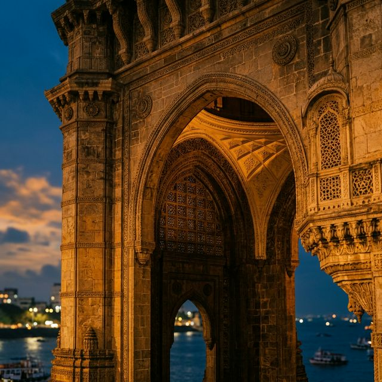
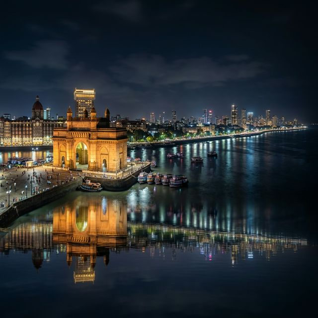
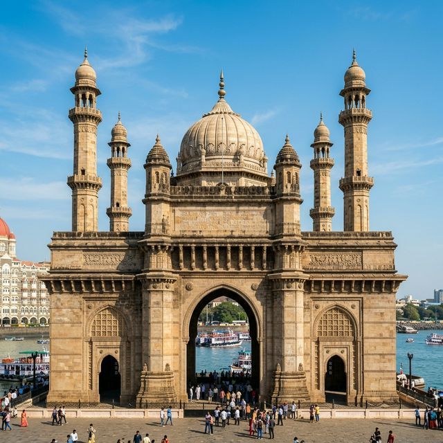

History & Heritage
The Gateway is a spectacular Indo-Saracenic arch built to commemorate the 1911 visit of King George V. Its yellow basalt stone gleams with historical depth.
Architectural Splendor
Designed by George Wittet, it merges 16th-century Gujarati architecture with classic Roman triumph arches, featuring a massive central dome.
Visitor Information
Located at Apollo Bunder tip, it offers stunning views of the Arabian Sea and serves as the primary ferry point for Elephanta Caves.
Visual Gallery
A Glimpse of the Majesty



History & Timeline
Chronicles of the Arch
1911
Foundation Stone Laid to welcome King George V.
1924
Inauguration ceremony marking full completion.
1948
The Somerset Light Infantry departs through the arch.
Present
A global icon and symbol of Mumbai's spirit.
Visit The Gateway
Plan Your Experience
Essential Details
- Location: Apollo Bunder, Colaba, Mumbai, MH 400001
- Best Time: November to March, specifically at Sunrise.
- Connectivity: Ferry service to Elephanta Caves every 30 mins.
- Heritage: Overlooks the Taj Mahal Palace Hotel.